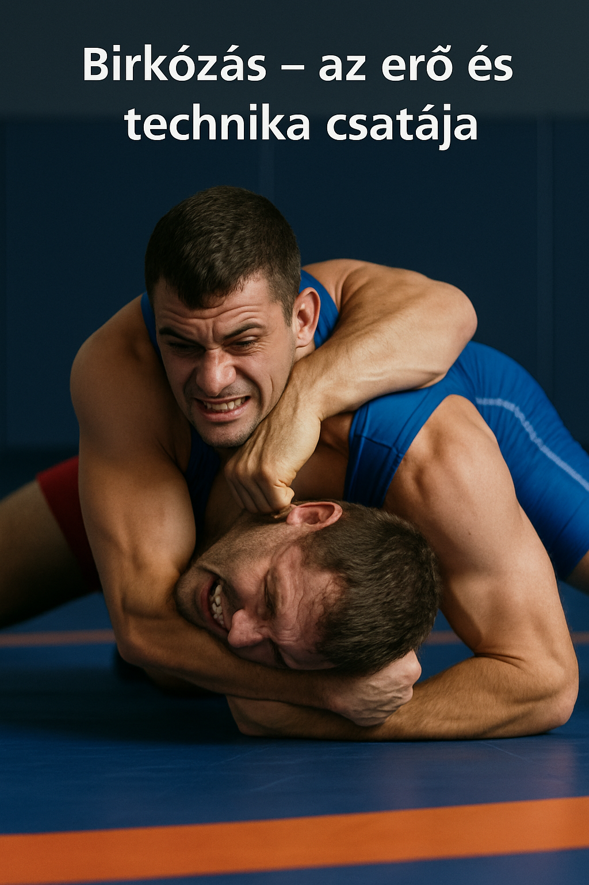
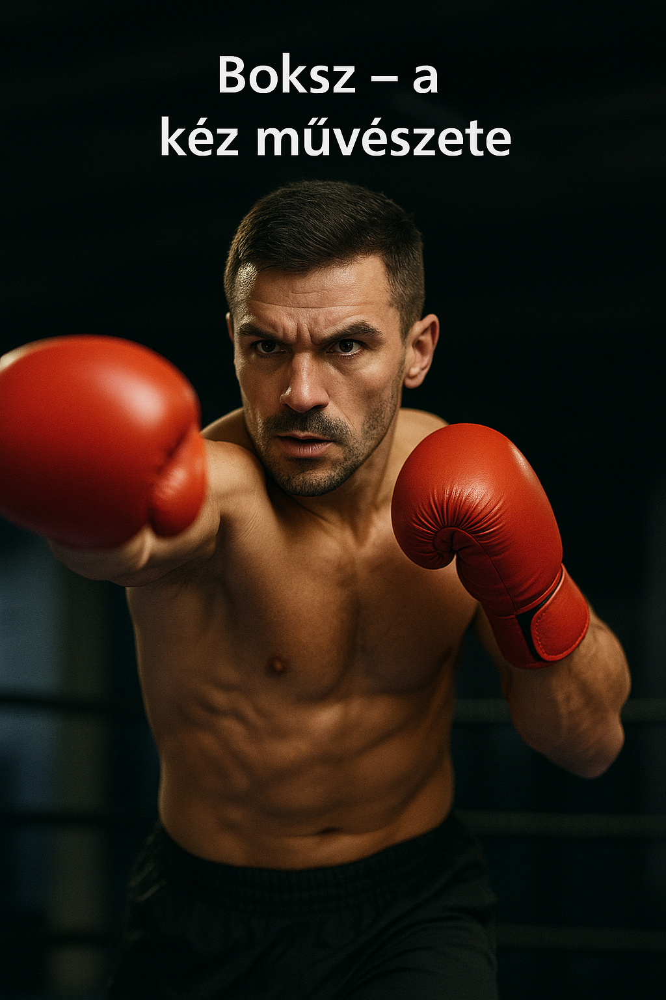
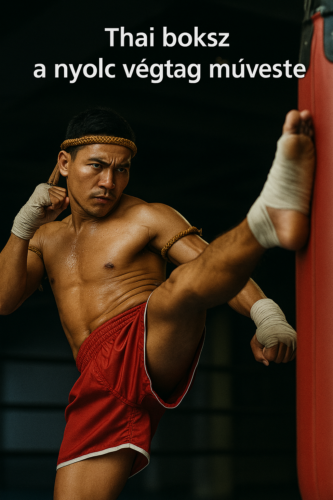

A Harcművészet Világa
Üdvözlünk a Harcművészet Világában!
Fedezd fel a test és lélek összhangját! Weboldalunk a tradicionális és modern harcművészetek világába kalauzol el – legyen szó bokszról, thai bokszról vagy akár a birkózásról. Célunk, hogy segítsünk eligazodni a stílusok között, megmutassuk az egyes irányzatok filozófiáját, technikáit és történelmét, valamint lehetőséget biztosítsunk az edzésekhez való csatlakozáshoz.
| Irányzat | Származási Ország | Harc típusa | Fő technikák | Védőfelszerelés szükséges? | Küzdelem formája | Fizikai igénybevétel | Javasolt kezdőknek? |
|---|---|---|---|---|---|---|---|
| Birkózás | Görögország / USA | Földharc | Fogások, dobások, leszorítások | ✅ Igen (fülvédő, cipő) | Sportverseny | 🔴 Nagy | ✅ Igen |
| Boksz | Anglia | Állóharc | Ütések (kéz), védekezés, lábmunka | ✅ Igen (kesztyű, fejvédő) | Ringben, pontozás | 🟠 Közepes–nagy | ✅ Igen |
| Thai boksz | Thaiföld | Állóharc (teljes) | Ütések, rúgások, könyök, térd, klinch | ✅ Igen (sípcsontvédő, kesztyű) | Ringben, KO/pontozás | 🔴 Nagyon nagy | 🔶 Középhaladóknak |
Melyik harcművészet illik hozzád?
A harcművészet kiválasztása gyakran attól függ, mit keresel: testi erőnlétet, önvédelmi tudást, versenylehetőséget, vagy akár mentális kihívást. Az alábbiakban röviden bemutatjuk, mire számíthatsz, ha elkezded az egyik népszerű, teljes kontaktusú küzdősportot.
Birkózás – az erő és technika csatája

A birkózás egyike a legősibb küzdősportoknak, és tökéletes választás azok számára, akik a földharcot, a test-test elleni küzdelmet és a fizikai kontroll technikáit szeretnék elsajátítani. A birkózó nem üt vagy rúg – itt a cél az ellenfél megbillentése, földre vitele és ott tartása. Kiváló alap lehet más sportágakhoz, például MMA-hoz is.
Boksz – a kéz művészete
Az ökölvívás a világ egyik legismertebb küzdősportja. Tisztán kéztechnikával dolgozik, ezért remekül fejleszti a reflexeket, a pontosságot, valamint az állóképességet. Az edzések dinamikusak, pörgősek és rendkívül hatékonyak a fizikai kondíció javítására. Ha még sosem sportoltál, a boksz jó belépő a küzdősportok világába.
Thai boksz – a nyolc végtag művészete

A Muay Thai a legharcosabb és legkomplexebb a három közül. Az ököl, láb, könyök és térd használata révén egy intenzív és erőteljes küzdősport. Nagy hangsúly van a testi edzettségen, fájdalomtűrésen és a küzdelmi szellem fejlesztésén. Bár brutálisabbnak tűnhet, valójában nagyon szabályozott, strukturált rendszer, amely mély tiszteletre és fegyelemre tanít.
Tipp: Hogyan válassz?
- Ha szereted a test-test elleni küzdelmet és inkább földharcban gondolkodsz → Birkózás
- Ha gyors reflexeket, jó ütőtechnikát és klasszikus sportélményt keresel → Boksz
- Ha intenzív, teljes testet megmozgató küzdelmet akarsz, és bírod a kihívást → Muay Thai